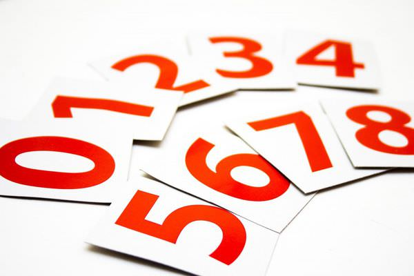

<!DOCTYPE html>
<html lang="zh-tw">
<head>
    <body background="background1.jpg"></body>
    <link href="style.css" rel="stylesheet" type="text/css">
    <meta name="description" content="期中報告">
    <meta name="author" content="14+3B017009+賴欣彥">
    <title>個人介紹-興趣</title>
</head>
<body>
    
    <nav>
        <ul class="flex-nav">
            <li><a href="./index.html">首頁</a></li>
            <li><a href="./期中考家庭背景.html">家庭背景</a></li>
            <li><a href="./期中考3.html"><font color="red">興趣</font></a></li>
            <li><a href="./期中考運動專長.html">運動專長</a></li>
            <li><a href="./期中考5.html">目標</a></li>
        </ul>
    </nav>
    <div class="wrap">
        <div class="content">
            &emsp;
            
        </div>
    </div>
    <div class="box">    
    
    <p><h1>興趣</h1>
    <h2>「勞役結合」
        <br>我喜歡動腦去玩解謎遊戲，每當我得出題目的答案時，總是讓我很有成就感。我也喜歡看小說，小說雖然沒有畫面但這給了我更多的想像空間，十分有趣。做完事累了之後也會聽音樂來放鬆。
        
    </h2>
    </p>
    <br><br><br><br>
</body>
</html>